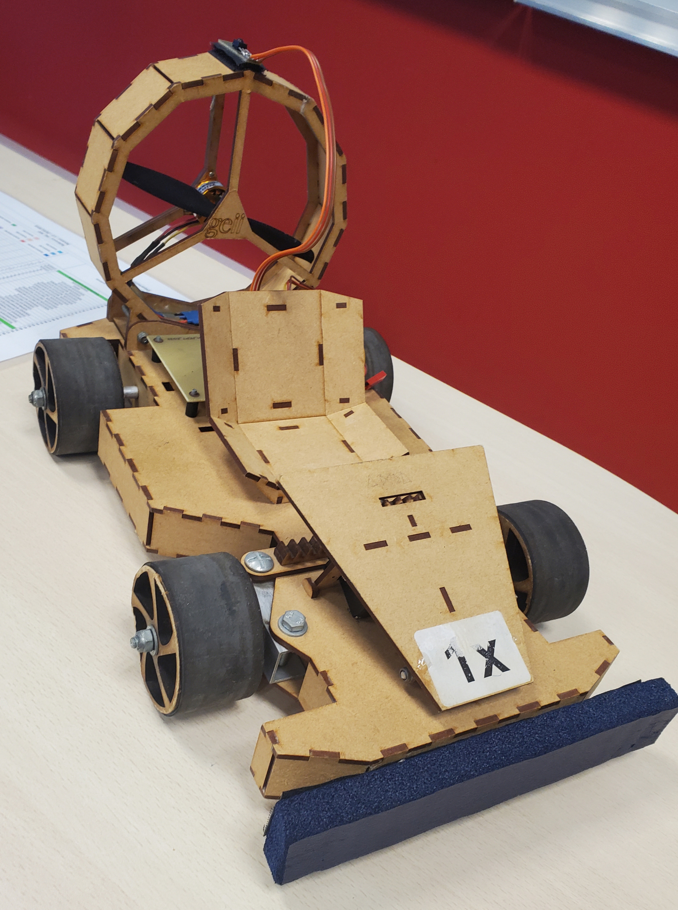

BUT GEII

Robot Mini-Sumo
Conception d'un robot autonome capable de détecter et d'éjecter un adversaire d'un dohyo. Travail sur l'électronique de puissance, les capteurs infrarouges et la stratégie de combat en C++.
Détails du projet
Kart à hélices
Réalisation d'un véhicule propulsé par une hélice. Ce projet a permis d'étudier la mécanique des fluides, la motorisation brushless et le pilotage électronique de la poussée.
Détails du projet
Projet Radiogoniométrie
Étude et mise en œuvre d'un système permettant de déterminer la direction d'une source d'émission radio. Analyse de signaux et traitement d'antennes.
Détails du projetDU Robotique Autonome

Robot Holonome Autonome
Programmation d'un robot capable de se déplacer dans toutes les directions pour sortir d'un labyrinthe de manière autonome. Utilisation d'algorithmes de cartographie et d'évitement d'obstacles.
Détails du projet
Robotic Hand
Contrôle d'une main robotique via un gant équipé de capteurs de flexion. Le système traduit les mouvements réels de la main en commandes précises pour les servomoteurs de la main artificielle.
Détails du projetMini-Projets
Aperçu d'autres concepts techniques abordés lors de travaux pratiques et de recherches personnelles.